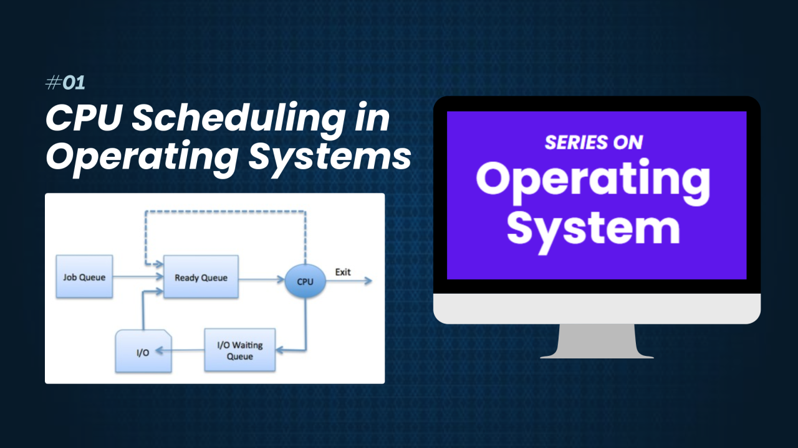

CPU Scheduling in Operating Systems
Ashmita Pandey · · Operating Systems

Hi everyone, I'm Ashmita 👋
In the world of Operating Systems, understanding CPU scheduling is crucial to building efficient systems. CPU scheduling determines which process gets access to the CPU and when, directly affecting system performance, user experience, and resource utilization.
In this article, we’ll explore CPU Scheduling in depth, break down each scheduling algorithm, and explain their pros, cons, and real-world applications.
What is CPU Scheduling?
CPU Scheduling is the method by which the operating system selects a process from the ready queue to be executed by the CPU. Since the CPU can only execute one process at a time, scheduling helps in managing multiple processes by giving each process CPU time as efficiently as possible.
Objectives of CPU Scheduling:
- Maximize CPU utilization
- Minimize waiting and response time
- Improve system throughput
- Ensure fairness among processes
Why Do We Need CPU Scheduling?
Imagine running multiple apps on your phone. Only one app can actively use the CPU at a time. CPU scheduling decides which app runs when and for how long, making sure your system remains responsive and efficient.
Without CPU scheduling:
- Some processes may starve (never get CPU time)
- CPU may remain idle if not properly utilized
- System responsiveness will drop
Important Terms to Know
Before diving into algorithms, here are a few key terms:
- Arrival Time: When the process enters the ready queue.
- Burst Time: Time needed by the process for CPU execution.
- Completion Time: Time when the process finishes execution.
- Turnaround Time: Completion Time – Arrival Time
- Waiting Time: Turnaround Time – Burst Time
- Response Time: Time from submission to first response
Types of Scheduling
1. Preemptive Scheduling
- The CPU can be taken away from a running process.
- Example: A call interrupts your music app — the call gets CPU access.
2. Non-Preemptive Scheduling
- Once the CPU is assigned, it cannot be taken away until the process finishes.
- Example: Printer queue jobs where the first job prints fully before the next starts.
CPU Scheduling Algorithms
Let’s explore the main algorithms used for CPU scheduling with examples.
1. FCFS (First Come, First Serve)
- Processes are scheduled in the order they arrive.
- Non-preemptive.
Real World Example: Queue at a railway ticket counter.
Pros: Simple and easy to implement. Cons: High waiting time if a long job comes first (convoy effect).
2. SJF (Shortest Job First)
- The process with the smallest burst time is scheduled first.
- Non-preemptive.
Real World Example: A printer finishing small documents before a big one.
Pros: Minimum average waiting time. Cons: Starvation of longer processes.
3. SRTF (Shortest Remaining Time First)
- Preemptive version of SJF.
- At any time, if a new process arrives with less remaining time, it preempts the current one.
Real World Example: Emergency room prioritizing shorter, more critical tasks.
Pros: Better turnaround and response time. Cons: High complexity and starvation possible.
4. Round Robin (RR)
- Each process gets a fixed time slice (time quantum).
- After time expires, the process goes to the back of the queue.
Real World Example: A multiplayer game server giving turns to each player.
Pros: Fair and responsive. Cons: Performance depends heavily on time quantum.
5. Priority Scheduling
- Each process is assigned a priority. The CPU is assigned to the process with the highest priority.
- Can be Preemptive or Non-Preemptive.
Real World Example: Emergency services prioritized over regular appointments.
Pros: Important tasks are handled faster. Cons: Starvation of low-priority tasks.
6. HRRN (Highest Response Ratio Next)
- Priority is based on response ratio = (Waiting Time + Burst Time) / Burst Time.
- Non-preemptive.
Real World Example: A restaurant prioritizing people who’ve been waiting long over new customers.
Pros: Balances short and long jobs fairly. Cons: Slightly complex.
7. Multiple Queue Scheduling (MQS)
- Processes are divided into multiple queues based on priority or type (interactive, batch, etc).
- Each queue has its own scheduling algorithm.
Real World Example: Airport lines for economy, business, and first-class passengers.
Pros: Efficient for diverse processes. Cons: Risk of starvation in lower queues.
8. Multilevel Feedback Queue (MLFQ)
- Like MQS, but processes can move between queues based on their behavior.
- Designed to be adaptive.
Real World Example: A teacher giving more time to struggling students and less to quick learners.
Pros: Highly responsive and adaptive. Cons: Most complex to implement.
Summary of Algorithms
- FCFS is easy to implement but may lead to long wait times for short processes.
- SJF minimizes waiting time but can cause starvation for longer tasks.
- SRTF is better for response time but is complex and can starve larger processes.
- Round Robin is fair and works well in time-sharing systems but depends heavily on the chosen time quantum.
- Priority scheduling executes important tasks faster but may starve lower-priority tasks.
- HRRN ensures fair execution based on waiting time and process size.
- Multiple Queue Scheduling handles different process types well but may be unfair to some queues.
- Multilevel Feedback Queue is flexible, adaptive, and suitable for real-world multitasking systems, though complex to implement.
Conclusion
CPU scheduling is fundamental in multitasking systems. Each algorithm is designed for specific types of processes and use cases. Understanding them helps in designing faster, fairer, and more reliable systems.
Whether it’s a phone balancing calls and apps or a cloud server managing hundreds of users, CPU scheduling ensures everything runs smoothly.
Thanks for reading!
Would love to hear your thoughts and questions in the comments.